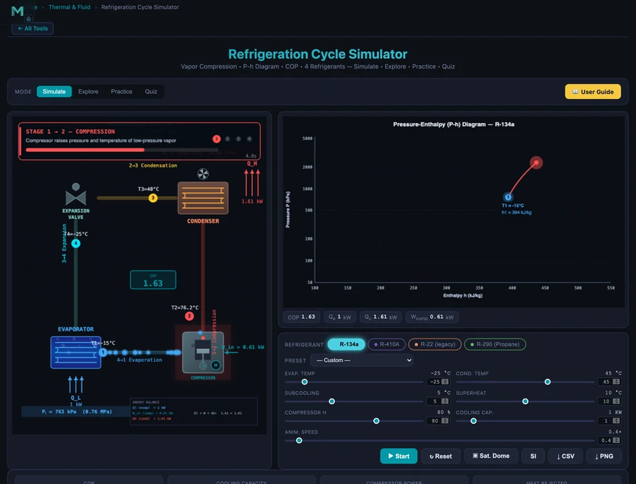

- The coefficient of performance (COP) of a vapour-compression refrigeration cycle is the cooling output divided by compressor work input: COP = q_evap / w_comp = (h1 − h4) / (h2 − h1).
- For R-134a at T_evap = −15 °C, T_cond = 35 °C and 80% isentropic efficiency, the cycle gives COP ≈ 2.56, a pressure ratio of 3.41, and a discharge temperature of 62.1 °C.
- Real cycles reach about 40–60% of the Carnot limit COP_Carnot = T_L / (T_H − T_L); COP falls as evaporator temperature drops or condenser temperature rises.
The Vapour-Compression Refrigeration Cycle
Vapour-compression refrigeration is the thermodynamic process behind almost every air conditioner, domestic refrigerator, heat pump, and industrial chiller in use today. A refrigerant circulates continuously through four components — evaporator → compressor → condenser → expansion valve — absorbing heat at low temperature and rejecting it at high temperature. The only energy input is the compressor work, and the efficiency of this heat-pumping process is measured by the coefficient of performance (COP).
The NHIT VisualLab Refrigeration Cycle Calculator animates all four processes on a pressure–enthalpy (P-h) diagram and computes every key performance metric in real time. It supports four common refrigerants — R-134a, R-410A, R-22, and R-290 (propane) — and allows independent control of evaporator temperature, condenser temperature, superheat, subcooling, isentropic efficiency, and system capacity.
The Four Processes and Their Equations
Label the four state points around the cycle as 1 (evaporator outlet / compressor inlet), 2 (compressor outlet), 3 (condenser outlet), and 4 (expansion valve outlet / evaporator inlet).
Process 1→2: Isentropic Compression
The compressor raises the refrigerant from low-side pressure to high-side pressure. For an ideal (isentropic) compressor, entropy is constant. In practice, an isentropic efficiency η is applied:
where h2s is the enthalpy at isentropic discharge and ηis is typically 0.70–0.85 for modern reciprocating or scroll compressors.
Process 2→3: Condensation
Hot, high-pressure vapour rejects heat to the environment (or a heat sink) in the condenser and exits as subcooled liquid. The heat rejected per unit mass is:
Process 3→4: Isenthalpic Expansion
The expansion valve (or capillary tube) drops the pressure from condenser level to evaporator level. Being adiabatic and throttling, enthalpy is conserved:
Part of the liquid flashes to vapour at the valve outlet. The vapour quality x4 tells you what fraction of the refrigerant is vapour entering the evaporator — lower quality means more liquid and a larger refrigerating effect.
Process 4→1: Evaporation
The refrigerant absorbs heat from the cold space, evaporating fully and picking up a small amount of superheat before leaving the evaporator. The refrigerating effect per unit mass is:
Coefficient of Performance
COP is defined as useful output (cooling) divided by required input (compressor work):
Carnot COP Limit
The theoretical maximum COP for any refrigeration cycle operating between absolute temperatures TL (evaporator) and TH (condenser) is:
Real cycles achieve roughly 40–60% of the Carnot COP due to irreversibilities in the compressor, heat exchangers, and expansion process.
Worked Example: R-134a Standard Conditions
Set the simulator to R-134a with Tevap = −15 °C, Tcond = 35 °C, superheat = 10 K, subcooling = 5 K, η = 80 %, and system capacity Q = 1.0 kW. The calculator produces:
- COP = 2.56
- Compressor power = 0.39 kW
- Heat rejected (condenser) = 1.39 kW = Qevap + Wcomp
- Pressure ratio = 3.41
- Discharge temperature = 62.1 °C
- Flash quality at expansion valve x4 = 30.9 %
- Mass flow rate = 6.5 g/s
An energy balance confirms: 1.39 kW ≈ 1.0 kW + 0.39 kW ✓. The Carnot COP for these temperature levels (TL = 258 K, TH = 308 K) is COPCarnot = 258/(308 − 258) = 5.16. The real cycle achieves 2.56/5.16 = 50% of the Carnot limit — typical for a well-designed system.

Effect of Operating Conditions on COP
Change Tevap to −25 °C and Tcond to 45 °C (a freezer in a warm room). COP falls to 1.63 and the pressure ratio climbs to 5.32, with a discharge temperature of 76.2 °C. Compared to the standard case, the cooling load now costs 60% more compressor work per kilowatt of refrigeration — a significant operating cost increase.
This sensitivity has major design and operational implications:
- Evaporator temperature — every 1 K drop in Tevap reduces COP by roughly 3–5%. Keeping evaporator coils clean and well-defrosted is an energy-saving maintenance priority.
- Condenser temperature — every 1 K rise in Tcond also reduces COP. Adequate condenser airflow and ambient temperature management (shading outdoor units) are important in hot climates.
- Compressor efficiency — changing η from 80% to 70% in the simulator shows how poor compressor condition (worn rings, valve leakage) directly inflates operating cost.
Refrigerant Comparison: R-134a vs R-410A vs R-290
Switch the refrigerant tab while keeping all other conditions at the standard values (−15 °C / 35 °C, η = 80 %) to compare the four refrigerants:
- R-134a (HFC) — COP ≈ 2.56, PR ≈ 3.4. Low operating pressures, widely used in automotive and light commercial refrigeration. GWP = 1430; subject to F-gas phase-down regulations.
- R-410A (HFC blend) — Higher operating pressures (~2× R-134a), dominant in residential split air conditioners. GWP = 2088; being replaced by R-32 and R-454B under current regulations.
- R-22 (HCFC) — Legacy refrigerant, now banned for new equipment in most countries. Useful as a reference baseline to understand performance history.
- R-290 (Propane, HC) — GWP = 3, excellent thermodynamic properties, COP often slightly higher than HFCs at the same conditions. Flammable (A3 safety class) — limited to small charge systems per EN 378 / IEC 60335.
Superheat, Subcooling, and System Efficiency
Superheat at the evaporator outlet ensures no liquid reaches the compressor. A typical target is 5–10 K superheat at the compressor suction. Too little superheat risks liquid slugging damage; too much reduces the fraction of the evaporator used for heat transfer and lowers qevap. The simulator shows how raising superheat beyond 10 K slightly reduces COP.
Subcooling at the condenser outlet increases h3's distance from the saturation line, reducing flash quality x4 at the expansion valve. This increases qevap = h1 − h4 without changing compressor work, so subcooling directly improves COP. A 5 K subcooler is standard on most systems; liquid-line / suction-line heat exchangers add further subcooling at the cost of slightly higher suction superheat.
Using the Refrigeration Cycle Calculator
Open the simulator and work through these scenarios:
- Standard R-134a cycle — Tevap = −15 °C, Tcond = 35 °C, η = 80 %, Q = 1 kW. Note COP, power, and PR. Verify the energy balance: Qcond = Qevap + Wcomp.
- Increase condenser temperature to 45 °C (hot day simulation). Observe COP drop and discharge temperature rise. This models the performance penalty of inadequate condenser airflow.
- Lower evaporator temperature to −30 °C (deep freeze). COP approaches 1 and PR exceeds 6 — approaching the limit of single-stage compression. In practice a two-stage system would be used.
- Add subcooling — increase subcooling from 0 to 10 K. COP improves measurably. Compare to the same improvement from reducing superheat and see which is more effective.
- Switch refrigerants at identical conditions. Compare COP, PR, and discharge temperature. Observe that R-290 often achieves slightly higher COP than HFCs.
- Scale capacity — change Q from 1 kW to 10 kW. Power and mass flow scale proportionally; COP is unchanged. This demonstrates that COP is a property of the cycle conditions, not the system size.
Key Takeaways
- COP = Qevap / Wcomp. Every degree of improvement in evaporator or condenser temperature directly improves COP and reduces operating cost.
- Pressure ratio governs compressor stress. High PR means high discharge temperature and reduced compressor efficiency — multi-stage compression is preferred above PR ≈ 8.
- Subcooling is free efficiency. Adding subcooling increases refrigerating effect without increasing compressor work, improving COP at negligible capital cost.
- Real COP is typically 40–60% of Carnot. The gap is filled by compressor irreversibilities, heat exchanger temperature differences, and expansion valve losses.
- Refrigerant choice affects operating pressure and GWP. Modern low-GWP options like R-290 and R-32 offer good thermodynamic performance with reduced environmental impact.
Frequently Asked Questions
What is COP in a refrigeration cycle?
COP (Coefficient of Performance) measures how efficiently a refrigeration system moves heat relative to the compressor work input. It is defined as COP = Qevap / Wcomp, where Qevap is the heat absorbed in the evaporator (cooling effect) and Wcomp is the compressor work. A COP of 3, for example, means 3 kW of cooling for every 1 kW of electricity consumed.
Why does COP decrease when evaporator temperature drops?
Lowering the evaporator temperature raises the pressure ratio (high-side pressure / low-side pressure). A higher pressure ratio requires more compressor work per unit of refrigerant, while the enthalpy difference in the evaporator changes only slightly. The net effect is that Wcomp increases faster than Qevap, so COP = Qevap / Wcomp falls.
What is the difference between R-134a and R-410A?
R-134a (HFC) and R-410A (HFC blend) operate at different saturation pressures. R-410A has roughly twice the operating pressure of R-134a at the same temperature, allowing smaller compressors and heat exchangers. R-134a is common in automotive and light commercial refrigeration; R-410A is dominant in residential air conditioning. Both have high global-warming potential (GWP) and are being phased out in favour of lower-GWP alternatives like R-32 and R-290.
What is superheat and subcooling and why do they matter?
Superheat is the temperature increase of the refrigerant vapour above its saturation temperature at the evaporator outlet. It ensures dry vapour enters the compressor to prevent liquid slugging. Subcooling is the temperature decrease of liquid refrigerant below its saturation temperature at the condenser outlet. It increases the refrigerating effect by reducing flash gas at the expansion valve and improves overall COP.
What is pressure ratio and how does it affect the compressor?
Pressure ratio (PR) is the ratio of absolute condenser pressure to absolute evaporator pressure. A high PR increases the compression work and discharge temperature. Reciprocating compressors typically operate up to PR = 8–10; beyond that, multi-stage compression is more efficient. The simulator reports PR and discharge temperature so you can verify the compressor is within a safe operating range.